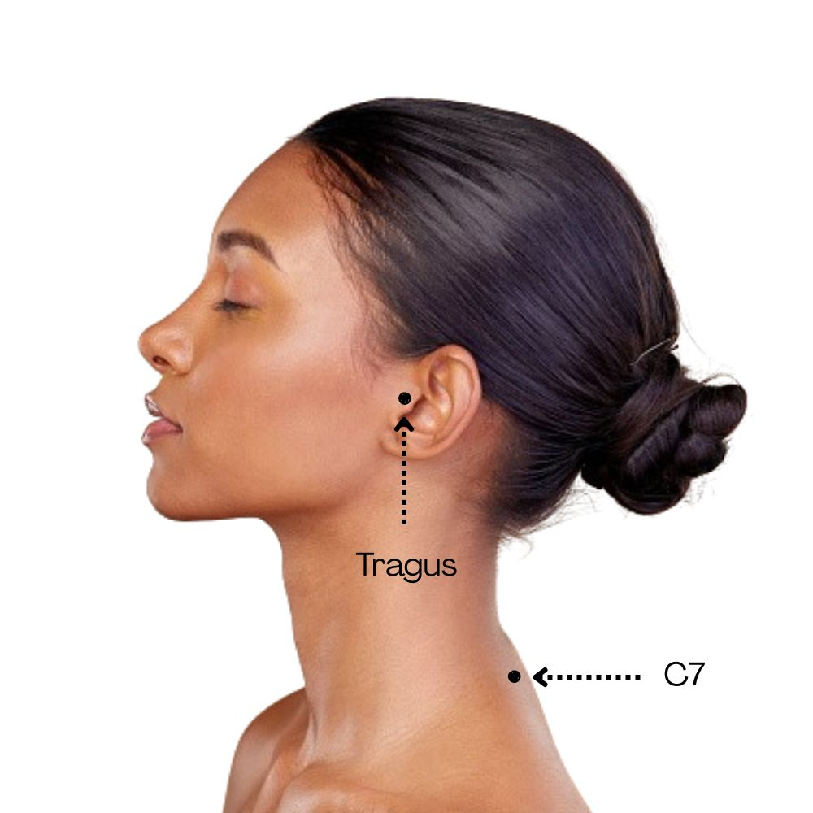

POSTURA
POSTURA
Instructions
Upload a side-view photo or use your camera.
Click on the
tragus (ear)
first.
Then click on
C7 (neck base)
.
Save each attempt to record results (up to 3 attempts).

Start
POSTURA
Open Camera
Flip Camera
Close Camera
Capture Photo
Reset Points
Save Attempt
Capture / Upload Again
Clear History
Processing... Please wait
Upload or capture a photo to start
⬅ Back to Instructions